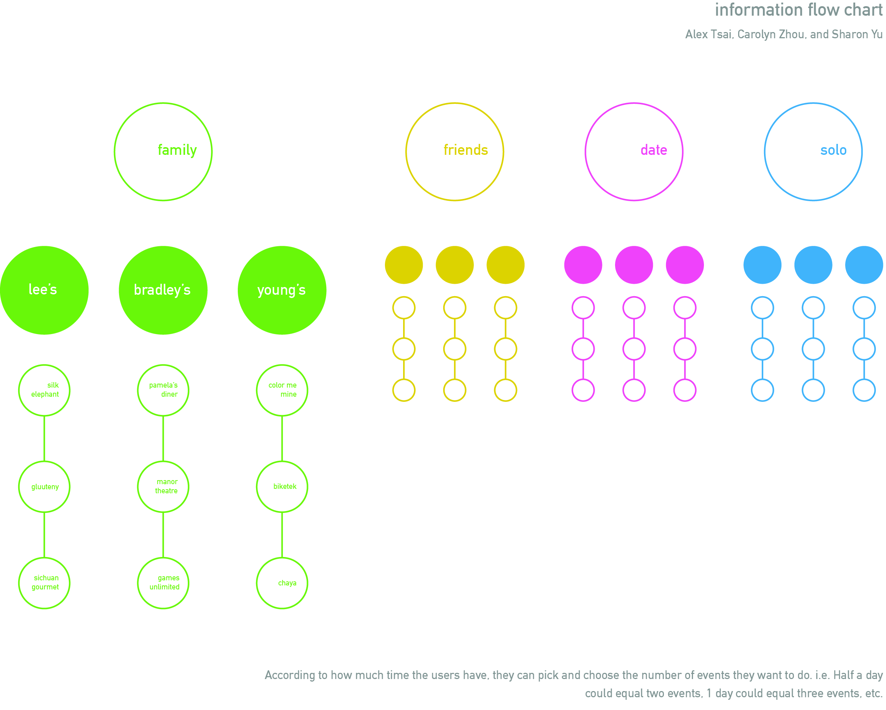
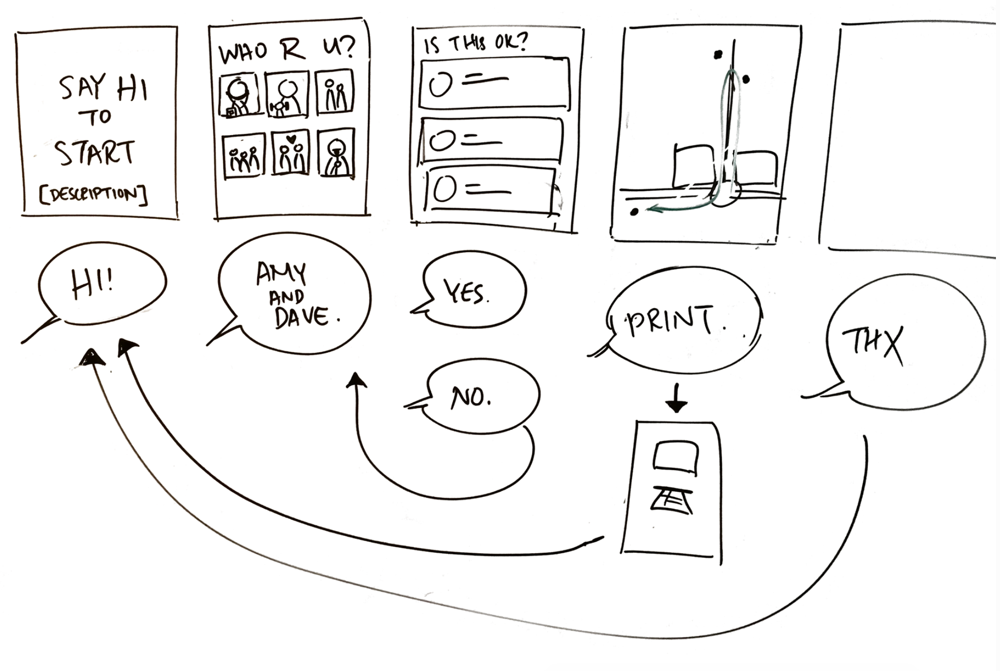
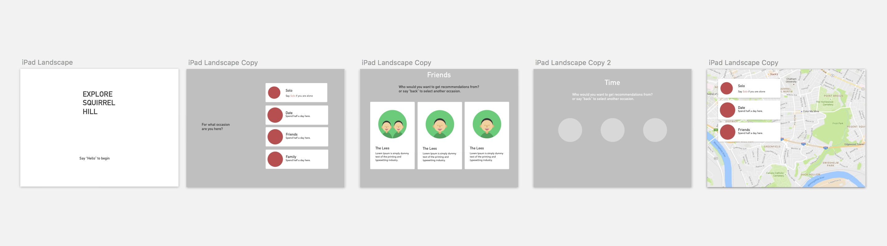

Exploring Squirrel Hill
Challenge
Create a wayfinding device that uses speech recognition as the sole form of input.
Outcome
A kiosk that recommends day trip itineraries in Squirrel Hill based on visitors' party size, interests and amount of available time to help them explore the neighborhood.
Role & Contributions
- Storyboarding
- Wireframing
- Graphics
- Motion
Teammates
- Alex Tsai
- Sharon Yu
Final Screens
Background
Squirrel Hill is a residential neighborhood in Pittsburgh, PA that offers a diverse range of experiences for entertainment, food, and shopping. Recognizing that college students and other visitors typically frequent the same tried-and-true restaurants and shops, we wanted our wayfinding device to bring attention to the lesser known "hidden gems" of the area.
Process
Information Structure
In order to be able to recommend trips, we perused Yelp to compile a list of possible destinations. Based on the kinds of activities we found, we constructed personas which we loosely defined as people who like food, people who like excitement and experiences, and people who enjoy quiet activities.
We then wanted to identify what type of trip it was: a solo adventure, a hangout with friends, a date, or a family trip. We assigned up to 3 activities for each type of group or individual.
Finally, based on the amount of time the visitor wanted to spend in the neighborhood, we provided one, two, or all of the items on the list in the itinerary.
Interface Design
We mapped out the user's journey in low- to mid-fidelity sketches.
 Content & Assets
Considering the free-flowing nature of human speech and how much room there is for error, we were careful to set up questions to receive one-word responses. The interface itself supplements the questions with visual feedback to acknowledge the user's input in the form of playful graphics. Each step is simple and gives clear instructions.
Below are character designs and animations I created, used as assets in our interface.

Form Considerations
We decided to make it an on-site kiosk because they are easily accessible for public use. We steered away from creating an app because we didn't want visitors to have to download something likely for one-time use. We felt that short responses would also mitigate the potential interference from background noise. Also, given the minimal number of steps required to get an itinerary, we guessed that lines and crowds around the kiosk would not be an issue.
Learning Outcomes
- Taking consideration for the context of a physical environment when designing a product
- Navigating the affordances and limitations of a speech recognition interface
- Coding with the p5 JavaScript library (bouncing circles, animating gifs, transitions, etc.)
Reflection
The speech-based interface was an assigned constraint, so I got to think about interactions that were more particular to a voice UI. For example, we realized that the chance of error with voice input was higher than touch, so we designed for one-word answers. At every step, we needed to make clear what we were asking.